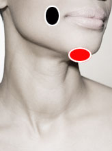

Distemper Canino*
Pares
lengua - mandíbula
parietal - parietal CL

Generalidades:
Síntomas respiratorios "Moquillo": En realidad se trata de un virus que infecta a los perros y otros animales, particularmente peligroso en cachorros. Es altamente contagioso, se transmite vía aérea. La mejor forma de prevención es la vacunación, también el permitir que los cachorros se alimenten de la leche materna les brinda mayor protección.
*Nota: Los síntomas y otras generalidades que se exponen en este artículo se refieren al desarrollo de la enfermedad en perros.
Transmisión:
Vía aérea, por objetos diversos, ropa; común en perros.